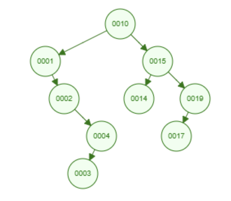

Introduction
A Binary Search Tree (BST) is a hierarchical data structure used for searching, sorting, and organizing data efficiently.
Properties of a BST
- Each node has at most two children: left and right.
- The left subtree contains only nodes with values less than the parent node.
- The right subtree contains only nodes with values greater than the parent node.
- No duplicate values are allowed.
Operations
Common operations performed on BSTs:
- Insertion
- Deletion
- Search
- Traversal (Inorder, Preorder, Postorder)
Example
Below is an example structure of a BST:
More Information
Learn more about BSTs on Wikipedia.